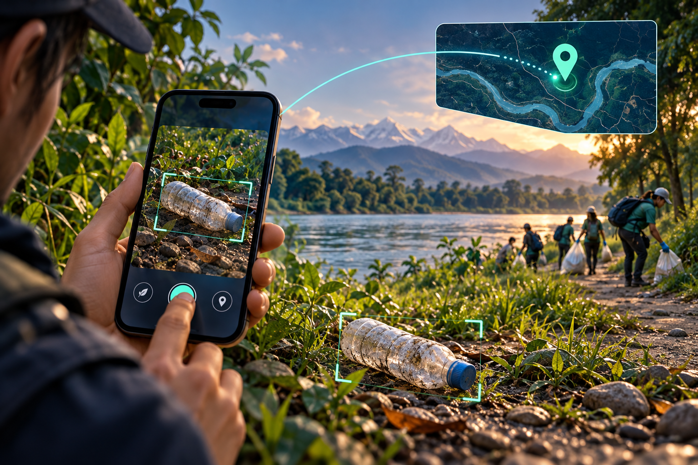

Languages
- Java
- Dart
- JavaScript
- TypeScript
- Python
- C
- C++
As a dedicated computer engineer, I am passionate about leveraging my expertise in
C, C++, Python, JavaScript, CSS, and React to design and develop innovative technological solutions.
Hi, I’m Prabin, a passionate computer engineer with a strong foundation in software development and a keen interest in exploring diverse programming languages and technologies. I am skilled in C, C++, Python, JavaScript, CSS, and React, and I
love building creative, efficient, and scalable solutions to real-world problems.
My learning journey has taken me from mastering the basics of low-level programming to creating dynamic, interactive web applications.
I design intuitive and visually appealing user interfaces that enhance user experience across both web and mobile platforms. My designs prioritize usability, accessibility, and modern aesthetics.
Learn moreI build fast, responsive, and scalable websites using the latest web technologies. Whether it's a portfolio, blog, or business site, I ensure quality performance and clean code architecture.
Learn moreI help businesses extend their functionality by integrating APIs like payment gateways, Google Maps, email services, and social logins into their applications.
Learn moreMY TOOLKIT
The languages, frameworks, and tools I use to bring my projects to life.
SELECTED WORK / 04 PROJECTS
From offline SOS to smarter travel — explore the projects, the features, and the technology behind them.
Emergency technology · Experimental prototype
Built for the moments when connectivity disappears. Rescuer Sathi saves an SOS locally before transmission and coordinates the journey from emergency alert to verified responder.
BUILT WITH
Explore on GitHub
02 Concept artworkComputer vision · Android application
Turns a waste photo into an actionable cleanup report. On-device detection combines with location context and a review workflow for tourists, administrators, and departments.
BUILT WITH
Explore on GitHubUniversity administration · Web application
A central workspace for university records and academic administration, connecting student and teacher information with courses, enrollments, and campus notices.
BUILT WITH
Explore on GitHubTravel planning · Bharatpur Pulse prototype
An interest-led travel planner for Bharatpur and Chitwan. Build a local itinerary around your group’s budget, available time, and interests, with a map to explore the plan.
BUILT WITH
Explore on GitHubIf you have any questions or inquiries, feel free to reach out to me.
Developed with ❤️ by Prabin Poudel ©2025